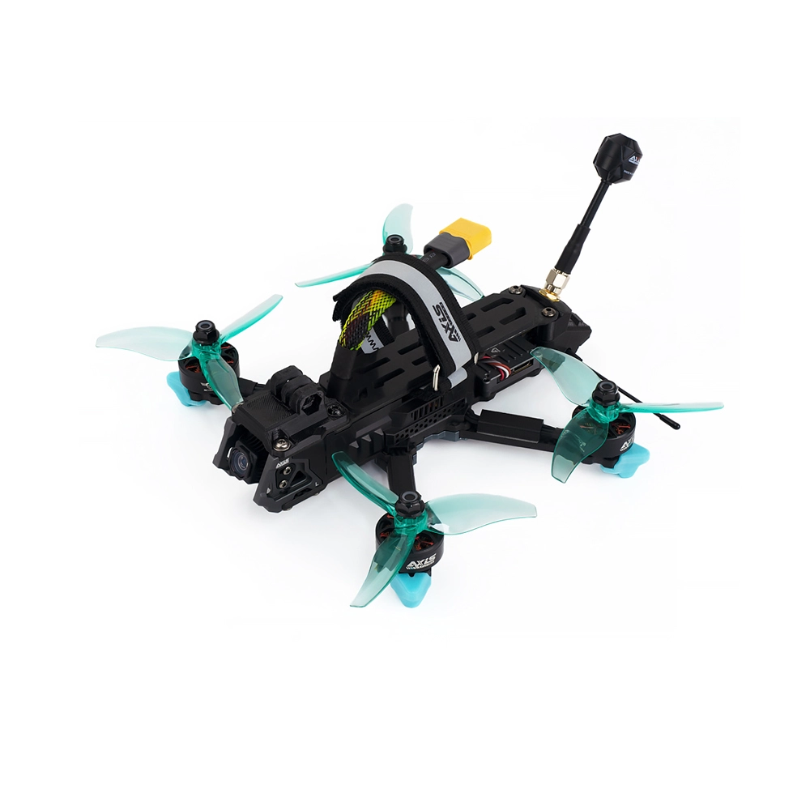
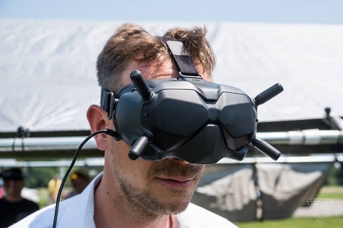
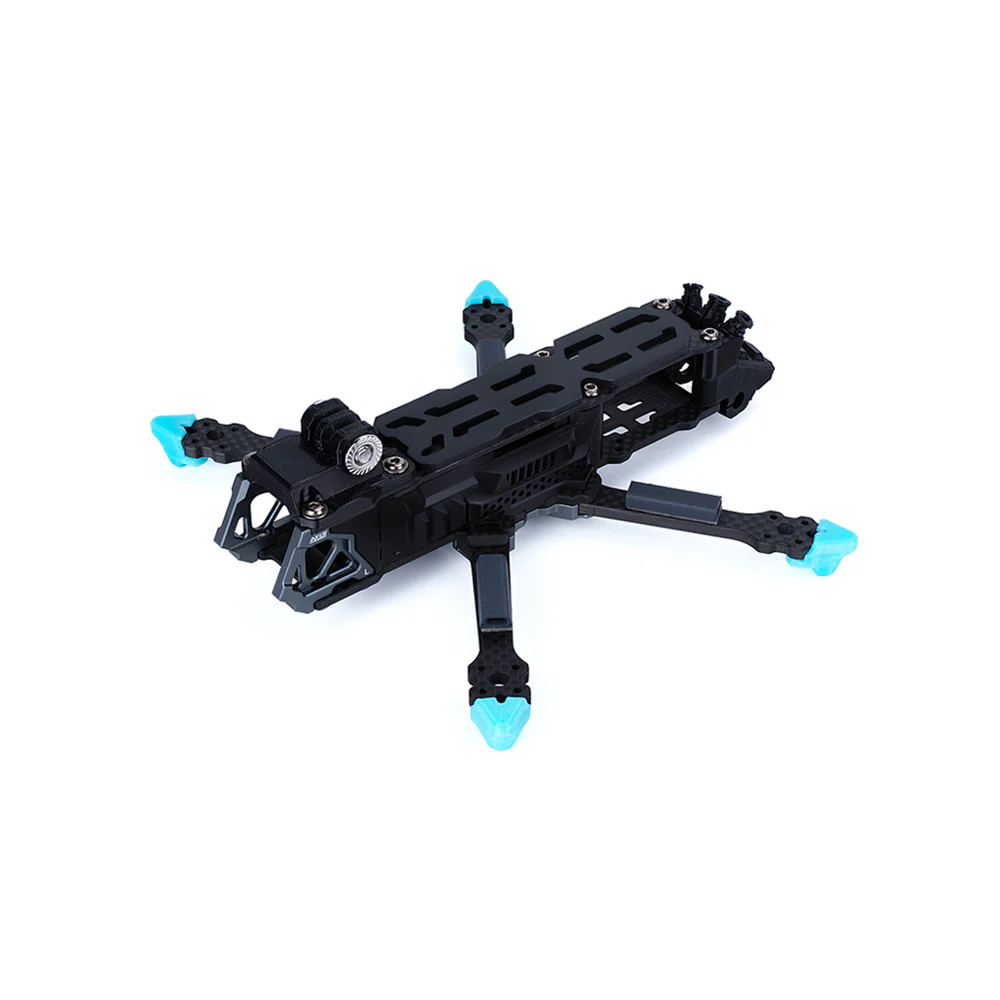
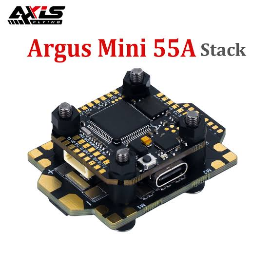
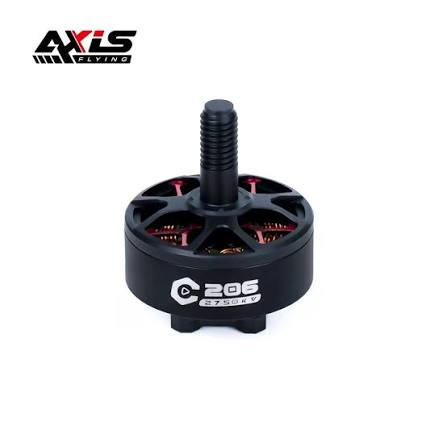
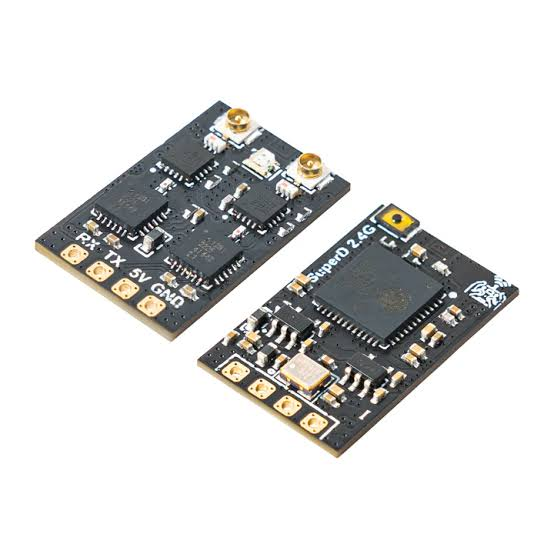
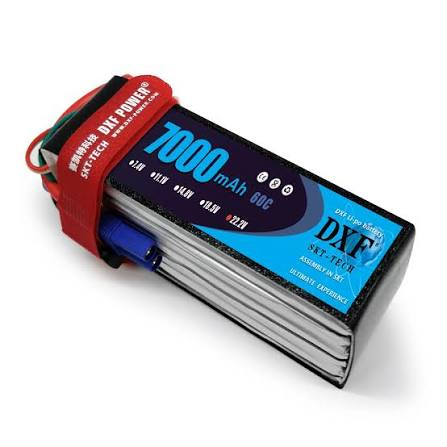

Conceptos de física, electrónica, comunicaciones y normativa para entender el vuelo en primera persona.
¿Qué es el vuelo FPV?
Definición, diferencias con drones comerciales, y el principio del control en lazo cerrado PID.
Ver secciónClasificaciones y Categorías
Tipos de drones FPV según tamaño, aplicación y entorno de vuelo.
Ver secciónModos de Vuelo
Angle, Horizon y Acro: cómo funciona cada modo y cuándo usarlo.
Ver secciónAnatomía del Dron
Función de cada componente: FC, ESC, motores, VTX, cámara y receptor.
Ver secciónRadio y Video
Protocolo ELRS, transmisión de video analógico vs. digital, y frecuencias.
Ver secciónBaterías y Energía
LiPo vs. LiHV, voltaje nominal, factor C, y almacenamiento seguro.
Ver secciónNormativa DGAC Chile
DAN 91, DAN 151 y recomendaciones de seguridad para el taller escolar.
Ver secciónSección 1
El vuelo en primera persona (FPV, First Person View) es una disciplina avanzada de la robótica aérea donde el piloto percibe el entorno de vuelo en tiempo real a través de la perspectiva de una cámara montada en la aeronave, como si estuviese a bordo de la cabina.
Esta experiencia inmersiva se logra mediante un sistema de transmisión de señales inalámbricas bidireccionales que comprende la captura de imágenes, el procesamiento de datos, la modulación de radiofrecuencia y la proyección visual de ultra baja latencia en unas gafas FPV.
El controlador de vuelo ejecuta un lazo de retroalimentación PID (Proporcional, Integral, Derivativo) que compara constantemente la velocidad angular solicitada por el piloto con las lecturas del giroscopio, aplicando correcciones en tiempo real a los cuatro motores.

Imagen del dron FPV — Vista general
assets/images/drone-fpv-overview.jpg
Gafas FPV — Vista en primera persona
assets/images/fpv-goggles.jpgSección 2
Los multirrotores FPV se clasifican principalmente por el diámetro de sus hélices, peso y entorno de operación.
| Categoría | Hélice | Peso | Entorno | Aplicación |
|---|---|---|---|---|
| Micro Whoop | 31 – 45 mm | 18 – 45 g | Interiores | Entrenamiento inicial, carreras en espacios reducidos |
| Toothpick / Ultra-light | 2.0" – 3.0" | 50 – 110 g | Parques pequeños | Acrobacia de baja inercia y bajo ruido |
| Cinewhoop | 2.5" – 3.5" | 150 – 450 g | Mixto, cerca de personas | Video cinematográfico con ductos protectores |
| ⭐ Manta 3.6" (Nuestro) | 3.6" | ~250 g | Exteriores abiertos | Freestyle, grabaciones, taller escolar |
| Freestyle Estándar | 5.0" – 5.1" | 550 – 800 g | Campos abiertos | Acrobacia alta velocidad, cámaras HD pesadas |
| Long Range | 7.0" – 10.0" | 800 – 1800 g | Grandes extensiones | Vuelos larga distancia, cartografía |
Sección 3
El giroscopio y el acelerómetro trabajan en conjunto para limitar el ángulo máximo de inclinación (usualmente a 45° o 55°). Al soltar los mandos de la emisora, la aeronave vuelve de forma inmediata a la posición horizontal respecto al suelo.
Es el modo ideal para principiantes. El dron se comporta de forma muy similar a los drones comerciales estabilizados.
Permite realizar rotaciones completas de 360° cuando las palancas se llevan a sus límites físicos, pero mantiene el comportamiento de nivelación automática cuando los mandos retornan al centro.
Es un modo intermedio que permite explorar acrobacias manteniendo cierta seguridad de nivelación.
El comportamiento de auto-nivelación se desactiva por completo. El piloto controla directamente la velocidad de rotación angular en grados por segundo en los tres ejes espaciales.
Si el piloto inclina el dron hacia adelante y suelta el mando, la aeronave mantendrá ese ángulo indefinidamente hasta que reciba un comando opuesto. Requiere correcciones constantes y alto nivel de memoria muscular.
Sección 4
Cada componente cumple una función específica dentro del balance de fuerzas mecánicas y flujo de energía eléctrica.

Esquema del chasis AxisFlying Manta 3.6" con componentes marcados
assets/images/manta-chasis-esquema.jpg| Componente | Función Técnica | Principio | Ubicación |
|---|---|---|---|
| Controlador de Vuelo (FC) | Procesamiento de señales y algoritmos PID | MCU en tiempo real + IMU/Giroscopio | Centro geométrico sobre amortiguadores |
| Variador (ESC) | Regulación de velocidad y potencia trifásica | PWM de alta frecuencia en MOSFETs | Base del stack debajo de la FC |
| Motores Brushless | Generación de empuje rotacional | Inducción electromagnética con imanes de neodimio | Extremos distales de los brazos |
| Hélices | Conversión de rotación en sustentación | Principio de Bernoulli y 3ra Ley de Newton | Montadas sobre los ejes de los motores |
| Receptor de Radio (RX) | Recepción de comandos inalámbricos | Desmodulación RF en 2.4 GHz, protocolo CRSF | Parte trasera, antenas alejadas del carbono |
| Transmisor Video (VTX) | Transmisión de imagen en tiempo real | Modulación FM analógica en 5.8 GHz | Parte trasera, requiere buena ventilación |
| Cámara FPV | Captura visual frontal | Sensor CMOS rápido con WDR | Sección frontal en soporte basculante |
| Condensador Electrolítico | Supresión de picos de voltaje | Almacenamiento capacitivo de respuesta rápida | Soldado en los pads de batería del ESC |

Stack Argus Mini F7 — FC + ESC
assets/images/stack-argus-f7.jpg
Motor AxisFlying C206 2750KV
assets/images/motor-c206.jpg
Receptor BetaFPV SuperD ELRS 2.4G
assets/images/receptor-superd.jpgSección 5
ExpressLRS es el protocolo de radiocontrol predominante en la industria. Es de código abierto y opera principalmente en la banda de 2.4 GHz.
Existen dos tecnologías para enviar la imagen desde el dron a las gafas:
El Manta 3.6" del taller usa sistema Analógico (VTX Rush Tank Mini).
Sección 6

Batería LiPo 6S con conector XT60
assets/images/bateria-lipo-6s.jpgSección 7 — Obligatorio
La operación de drones en Chile está estrictamente regulada por la Dirección General de Aeronáutica Civil (DGAC).
Se aplica para operaciones fuera de zonas urbanas: campos abiertos, cerros, áreas rurales despobladas.
Aplica si se vuela en patio del colegio, parques urbanos, zonas residenciales o calles.
Inscribir el dron ante el registro DGAC. Se asigna número de matrícula.
Mayor de 18 años, declaración jurada, examen DGAC con nota ≥ 75%.
Póliza vigente que cubra daños a terceros en caso de accidente.
Mínimo 30 metros de personas ajenas a la operación. No sobrevolar propiedades privadas sin consentimiento.
¿Listo para el siguiente paso?
Con la teoría dominada, avanza al módulo de armado y configuración del Manta 3.6".
Ir al Módulo de Armado